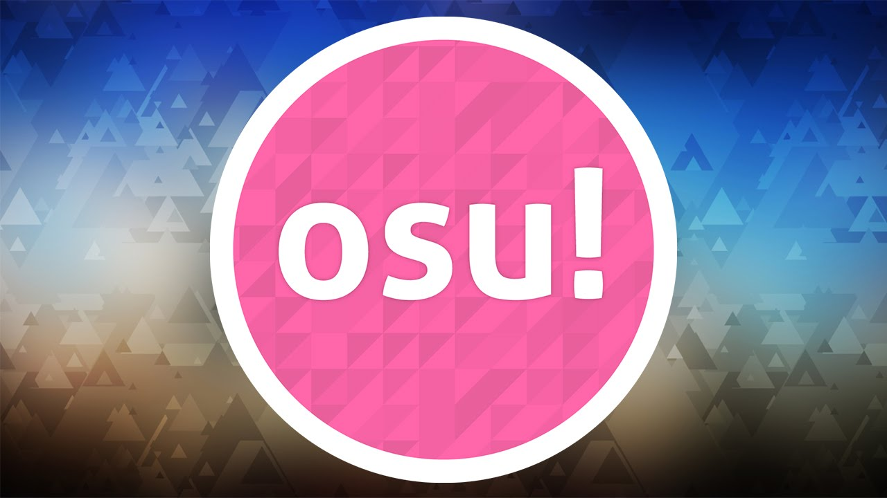

osu! gameplay is based on a variety of popular commercial rhythm games. While keeping some authentic elements, osu! adds huge customisation via skins/beatmaps/storyboarding, online rankings, multiplayer and boasts a community with over 500,000 active users! Play the way you want to play, with your own music, and share your creations with others.
